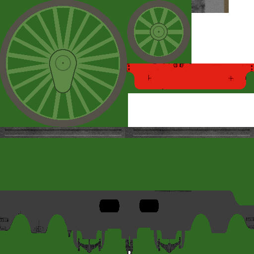

A Steam Loco for MSTS Using 3DCanvas
by Paul "decapod" Gausden
Chapter 3 - Getting The Shape Right
This next part will concentrate on getting the footplate profile and frames looking correct. Up till now we have done very little modelling ourselves - now it gets serious. Consequently, this Lesson I am going into as much detail as I can - though it is quite long, the actual work you do is quite small.
Firstly, this loco has a nice complex shape that the main body sits on.
All the locos I have built so far have had straight, flat surfaces - how do I build this one?
There are many possible ways - building up from several primitive objects joined together, object subtraction - Both options are either time consuming to do, or very expensive on polys (avoid object subtraction, it is not very accurate and can lead to complications later - 3DC V6 may fix this).
An alternative is to use an Extruded Object (not the extrude operation) - these are normally associated with high poly counts, but this can be easily controlled. It is worth practicing with this method as it can be used for many complex shapes found on locos (saddle tanks, smoke box supports etc - though for symmetrical items there is a slight change to the technique).
(This is where we find out how horizontal the plan is...)
- Drag the Extrude Object builder onto the scene - a new 4 panel window will appear - maximise this window.
- Press the background picture button (the small truck image on the top menu) and select the scanned plan - use the navigate control to find the side view and zoom out or in on the top left panel - ignore the distortion of the shape, this is corrected later.
- On the lower left panel, select two points on the horizontal about 18 squares apart. Look at the bottom left status bar to make sure their Y coordinates (second value of "Position x.xxxx, y.yyyyy") are exactly equal. They can be adjusted by dragging the points with the mouse. This will give our object depth.
- Pick a start point on the plan side view in the top right panel and click (lower front buffer beam).
- Now select subsequent points around the shape, clicking on each point twice until it turns blue. Where the shape is straight, place a point at each end of the straight. For curves, as a rough guide, use 2-4 points around a 90 degree bend (fewer for small radius curves). Hold the CTRL key and click to delete a point and SHIFT click to add a point before the one clicked.
- When you reach the start point again, instead of clicking on the start point, pick somewhere near, then drag the final point over the start point until you see an object appear in the top left panel - this could be below the grid so you may need to adjust the view as in the following:
- Now correct all the points by dragging with the mouse, so they are squared up horizontally or vertically and the Y or X coordinates match the other points. (my plan is not quite square, but the points should be made to match)
- Press the save button and close the window.
- Press the "Centre Selection on Frame" Operation button (white square with 4 black triangles and yellow centre) and drag the object up slightly with the right mouse button.
- We now need to orientate the shape correctly for the model. Right click on the object, select properties and adjust the group orientation - mine needed to rotate it 90 degrees anti-clockwise around the vertical axis (Y) then 180 degrees around the longitudinal axis (Z) like so:
It is possible yours may need a different rotation angles - I have yet to work out the mysteries of the extrude object.
- We can now correct the size (which removes the earlier plan distortion) - taking measurements from the plan (we already know the length is 14.32m), right click the object and select Scale/ToSize. Note because of the 90 degree Y rotation, X is currently the length for this object:
- Our extrude object group is currently not attached to the model so we drag it into the main group:
- Right click on the object and select properties once more... this time set the position values for X and Z to zero. Our object should appear centrally over the frames.
- Select the old flat footplate/solebar object and delete it.
- Use the right mouse button to drag the new object into position so the top of the frames object just disappears (use Ctrl UP/Down arrows for fine adjustment).
- Once you are happy with this, drag the object into the main group:
Now that was proper 3D modelling! Just to finish off...
- Remove the two lowest flat faces - these shouldn't be visible in MSTS. Use the face selection tool (white square on the right). Viewing from below, hold the CTRL key down, click on both faces so they are highlighted in pale blue and press the Delete key. The remaining lower faces need to be moved up slightly...
- Use the CTRL Key to select all the remaining lower faces as before and press the Cut button (or press CTRL-X).
- Switch to object select mode and select the footplate object again by clicking and press the Paste button (or press CTRL-V)
- The paste operation creates a new object, in a child group of the currently selected group, centred at 0.5, 0.5, 0.5 relative to the parent group. Right click and select properties, then change the position to 0,0,0 - which puts the faces you selected back to their original position (except they are now independent)
- Right click and drag the new object up slightly so it looks like the underside of the footplate.
- You may notice the footplate shading has changed - to correct this back to normal, use either the crease or the optimize operations on the object.
- Finally, if you are happy with the position of the underside of the footplate, select this object and use the combine object tool (double white circles on the right) to merge it back into the footplate object.
Use the Fill tool and a small dark area cropped from the texture to give it a dirty black colour all over.
Lots of instructions, but relatively quick to perform once you get the hang of extruding and cut & paste.
Onto the frames - firstly the model, then the texture.
- The frames created by the Engineer plugin are just given default values for size - Measuring on the plan from the top of the new footplate to the lowest part of the frames and springs gives the new height - Right click on the frame object and select Scale/To Size - change the Y value to your new measured height.
- Use the Shift Object tool (White and yellow square on the right menu) and use the Right mouse drag to shift the object vertically so the top of the frame just meets the top of the new footplate.
Frames do not need to be highly detailed, a general approximation to the right shape looks OK as they are mostly hidden behind the wheels. However, I am a teeny bit concerned about the length of this loco, so I will distort the texture vertically to get a slightly better resolution in one direction.
- "cut out" an approximate outline of the frames and springs (from the top of the footplate) from the plan with the painting program.
We can ignore the rear part of the texture where the footplate dips as there appears to be a raised cab floor and the bunker covering this. I will chop out the dip at the front and model the curved frames above the footplate front, as these are far more visible.
- I usually paste this as a new image to work on first, before adding to the final texture.
- Resize it to 512 pixels wide and about 128 high - my paint tool aliases the mask on resizing so I have to correct the mask with the fill tool or the edges wil go fuzzy.
- give it some colour (muddy dark brown) and add some details.
- transfer the new object onto the main texture file.

Apply the mask so the frames shape will be opaque when painted onto the shape - the darker green in the above image shows the area masked off.
Back to the model...
- View the model side that appears on the plan.
- Using the default orientation mode, crop the texture area to the new frames texture and use the Fill tool on the right menu on the frames object (don't worry if a bit of the texture sticks up at the front, the modelled frames should cover it).
- Export the shape to MSTS, et voila